Route 01 · 8 stops
Case study · Parenting app concept
Little Bloom
Helping first-time parents find company for the thing they feel least sure about.
- Problem
- First-time parents of children under five second-guess everyday decisions. Advice conflicts, and few have people nearby at the same stage.
- My role
- Solo: research, UX and UI. M.Des (IUxD) project guided by Prof. Suraj Joshi. 2 weeks, April 2026.
- Key insight
- Activities are where parents feel least sure, and also where they enjoy company.
- What I made
- The Community flow (find, join, see if it goes ahead, chat, host) and Onboarding → Home, in light and dark.
- Status
- Concept prototyped in Figma. Not yet usability-tested.
View Community prototype ↗Onboarding → Home prototype ↗
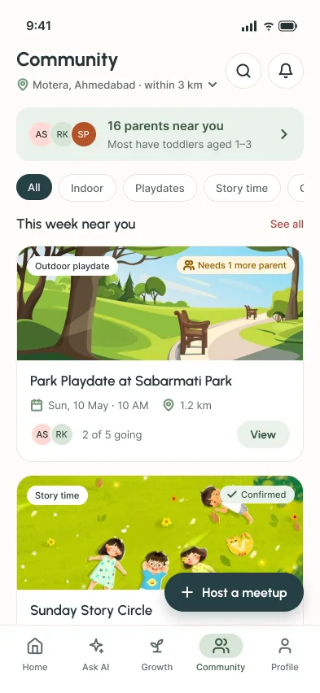
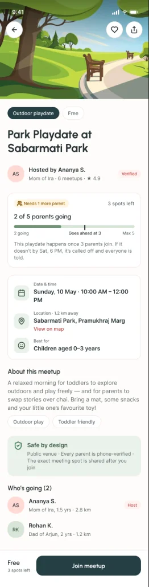
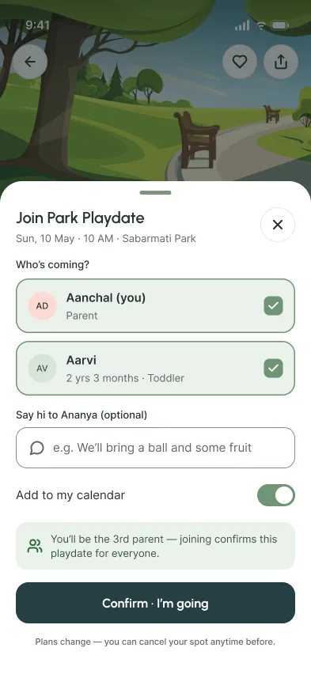
Stop 01 of 08
The brief and the problem
First-time parents second-guess small, everyday decisions, and the people they would ask aren’t always nearby.
How to keep a toddler engaged, whether a sleep pattern or a cough is normal, what to cook today. What parents find online often conflicts, so they fall back on their doctor and their family.
Something else came up in my conversations. Some parents said the early years can feel lonely, as if their own life has paused.
Problem statement
First-time parents of children aged 0–5 struggle with everyday childcare decisions because the information around them is conflicting or incomplete, and they have few people nearby at the same stage. This leads to constant second-guessing and, for some, a sense of isolation.
Stop 02 of 08
What parents told me
A survey for breadth, interviews for depth. I treat the numbers as signals: it is a small, informal sample.
Survey
- 18 parents of children aged 0–5
- Google Form, 12 questions
- 20–22 April 2026
Interviews
- 6 first-time parents, children under 5
- 2 of them living in joint families
- One-to-one, not recorded: themes noted afterwards
16/18
feel unsure about their child’s care at least “sometimes”.
13/18
didn’t describe the information they find as “helpful and clear”. 6 called it conflicting.
12/17
go to a doctor for advice, more than any other source. Family is close behind (11).
Confidence: food vs play
18 answered each question
Daily diet
Age-appropriate activities
Very confidentSomewhatNot very confident
What stood out
Only 1 of 18 parents wasn’t confident about diet. Activities were the weak spot: 6 of 18 weren’t confident choosing age-appropriate ones. That’s one reason Community is built around doing things together.
From the interviews
I didn’t record the interviews, so these are themes I noted afterwards, paraphrased rather than quoted.
Lonely at times
A mother of a two-year-old said the journey can sometimes feel lonely.
No time for themselves
Some felt their own life had halted, because they’re busy with the kids all the time.
Meeting other parents helps
Some felt better when they met other parents, especially doing activities with their kids together.
Unsure and tired
Others are often unsure how to raise their child, starting with what to feed them, and find it tiring.
Doctors for health
Some only trust a professional when it comes to their child’s health.
Some like figuring it out
A few enjoy the journey and want to figure things out on their own.
What this research can’t tell me
- — 18 parents is a small, informal sample, so I treat these numbers as signals.
- — The survey never asked about loneliness or meeting other parents. The need for Community rests on the six interviews.
- — Interest in a guidance app was mixed: 7 said “definitely”, 5 “maybe”, 4 “no”, so I didn’t assume everyone wants daily tips.
Stop 03 of 08
The reframe
First draft: I wrote the problem around nuclear families.
Then the survey came back: 11 of 18 respondents live in joint families, and still feel unsure.
Having family around doesn’t settle the doubts. So the app couldn’t assume it would.
Stop 04 of 08
From finding to decision
Each decision traces back to something parents said or did. This is where the research turns into design, the lavender tick on the route.
12 of 17 ask a doctor; 13 of 18 don’t find online information clear; in interviews, some parents only trusted professionals.
Trust matters more than the amount of information.
Health questions go to the doctor. Home reminds parents about the next vaccine instead of giving medical advice, and suggestions are short and matched to the child’s age.
Activities had the lowest confidence (6 of 18 not confident). In interviews, parents felt better doing activities with other parents.
Activities are where parents feel least sure, and also where they enjoy company.
Community is built around meeting up to do something together, like a playdate, a story circle or an art morning.
In interviews, parents said the journey can feel lonely, and that their own life can feel on hold.
Parents need people nearby they can see regularly.
Meetups within 3 km, filtered by the child’s age, with a group chat for each meetup.
Parents were protective and only trusted professionals with their child’s health. Nobody raised meeting strangers directly; this is my assumption.
Meeting strangers with a child needs to feel safe.
Phone-verified parents, public venues, the exact spot shared only after joining, and a playdate goes ahead only when at least 3 parents join.
A few parents want to figure things out themselves; interest in a guidance app was mixed.
Keep it optional.
Suggestions instead of tasks. Optional fields are marked, and the interests and permissions steps can be skipped.
Stop 05 of 08
Ideas left on the board
I put every idea on a sticky note, then grouped them by theme. 30 ideas; the 6 highlighted made it into the final flows.
Guidance & answers
- AI parenting chat
- Expert-verified answers
- Myth vs fact check
- Reassurance nudges
- Smart alerts
Everyday ideas
- No-screen ideas
- Quick meal ideas
- Daily planner
- Activity generator
- Daily suggestions (made it into the final flows)
- Weekly focus area
Health tracking
- Appointment reminder
- Vaccination tracker
- Milestone tracker
Community
- Local meetups (made it into the final flows)
- Finding nearby parents (made it into the final flows)
- Group formation (minimum needed) (made it into the final flows)
Finding & sharing
- Smart search
- Save / bookmark
- Recent queries
- Share suggestions
- Share with partner
Situations
- Travel checklist
- Emergency guides
Profile & safety
- Child profile setup (made it into the final flows)
- Age-based personalisation (made it into the final flows)
- Quiet mode (child-friendly)
- Profile visibility control
- Report / block users
- Language settings
Made it into the final flows (6 of 30)
Why I chose Community
The interviews pointed to feeling alone, and to feeling better doing activities with other parents. Content can’t fix that, so I started with Community.
What stayed on the board
— The brief asked for one flow end to end, so the other ideas stayed on the board.
Stop 06 of 08
Designing Community
Find a playdate nearby, join it, or host your own. Five decisions shaped it.
01
A playdate only goes ahead with at least 3 parents
Every playdate needs at least 3 parents, so you never meet just one stranger. Cards show “Needs 1 more parent” or “Confirmed”.
02
Joining happens in a sheet
Join opens a sheet over the details, so you don’t lose your place.
03
Two honest outcomes
Reach the minimum and it’s confirmed: the spot unlocks and the chat opens.
Otherwise it’s tentative, with the date it will be confirmed or called off.
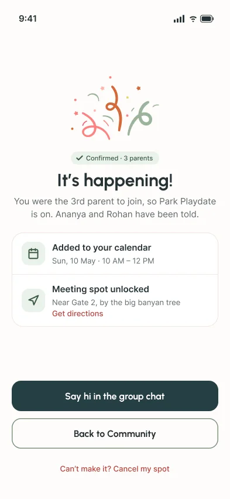
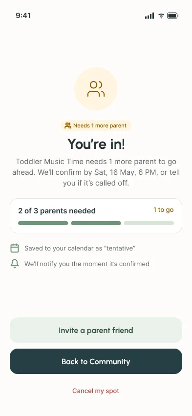
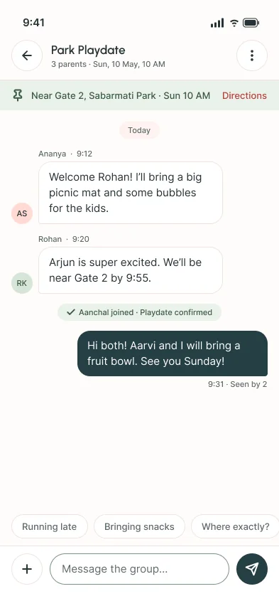
04
Safety rules, and cancelling
The details screen lists the safety rules: verified parents, public venues, and the spot shared only after you join.
Cancelling says what it changes, with Undo for slips.
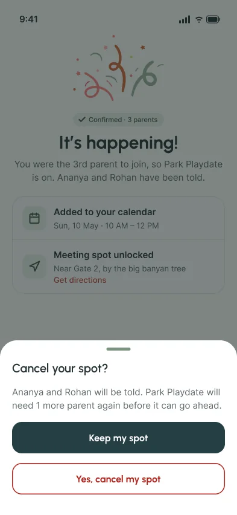
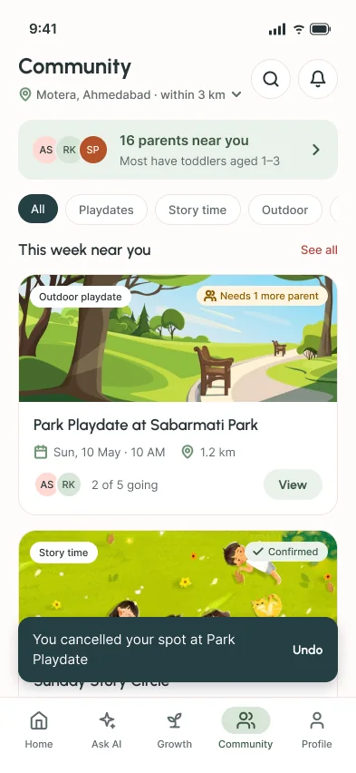
05
Hosting in three steps
One long form became three steps: basics, who it’s for, and a review.
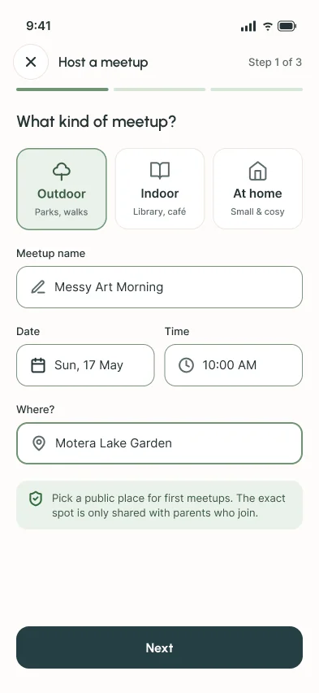
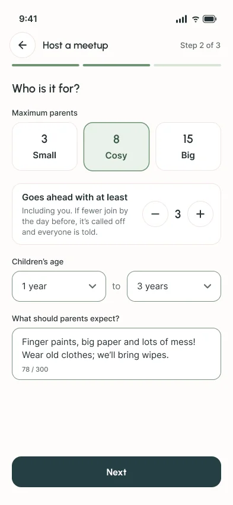
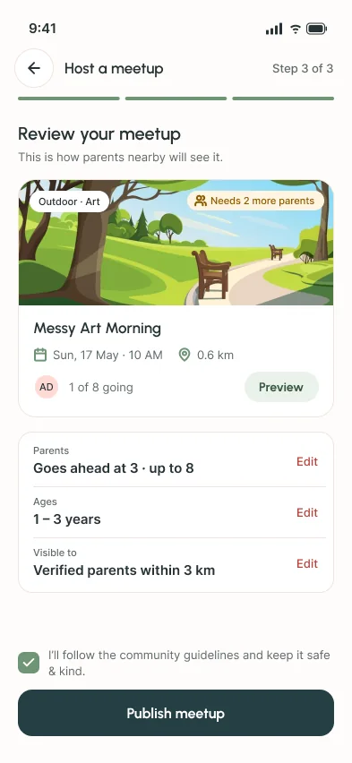
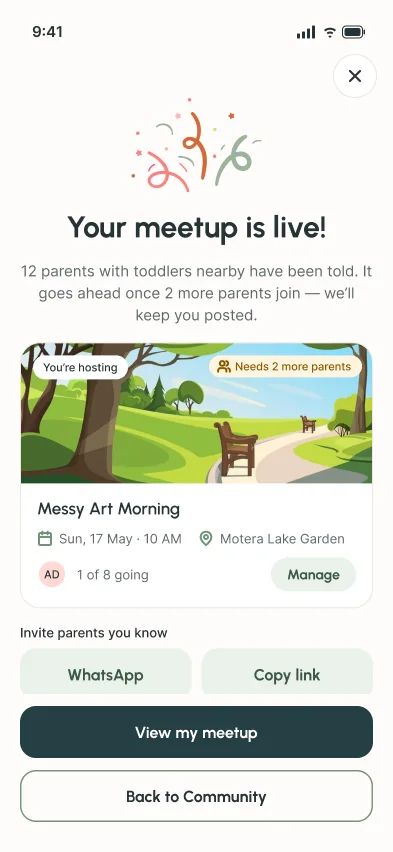
Stop 07 of 08
The final flows
Grey first, colour second. Then a second pass on both flows, in light and dark.
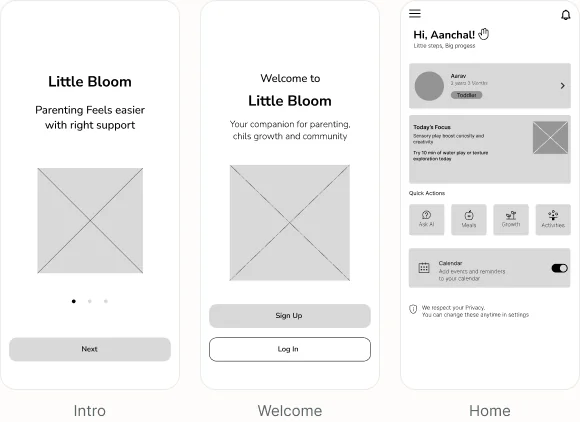
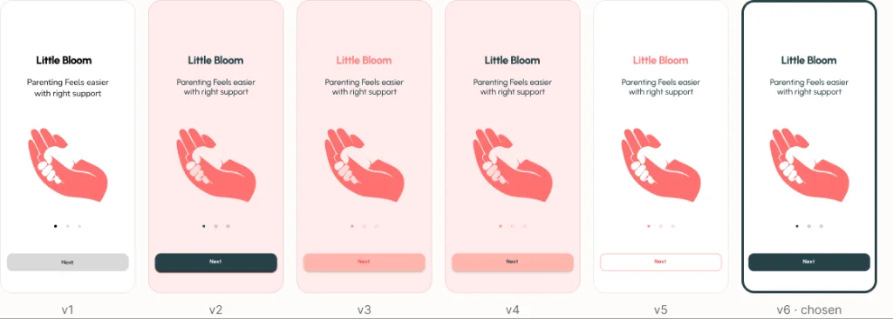
Onboarding → Home · 10 screens, 3 steps, skippable where it can be
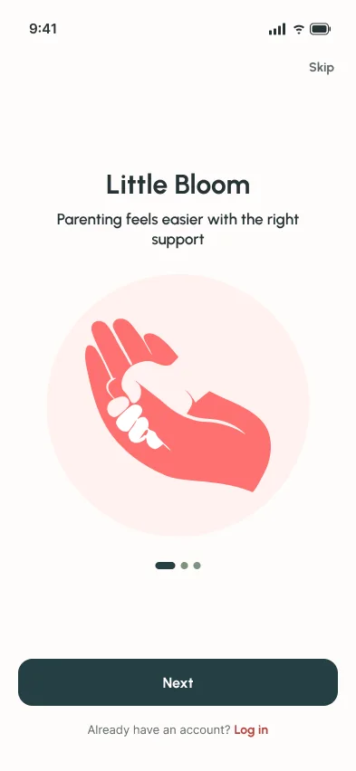
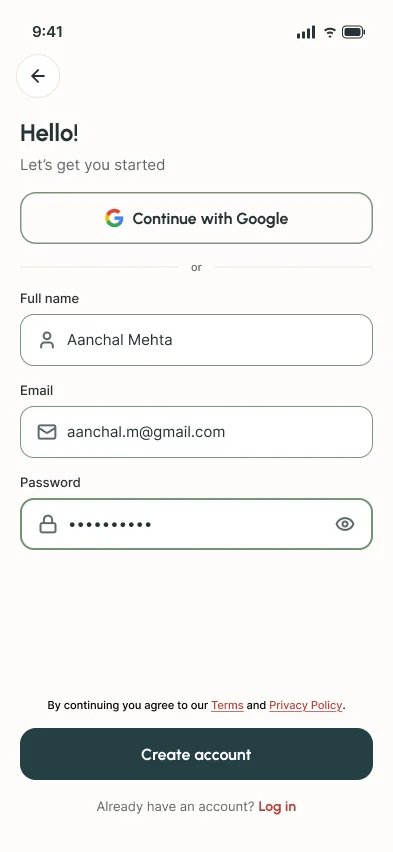
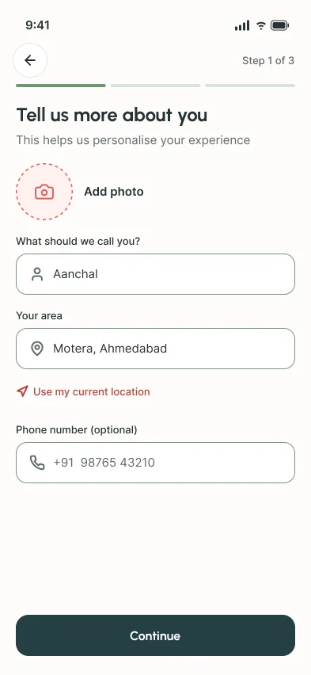
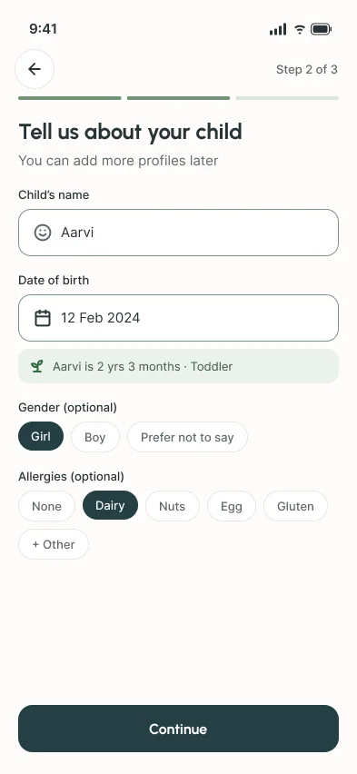
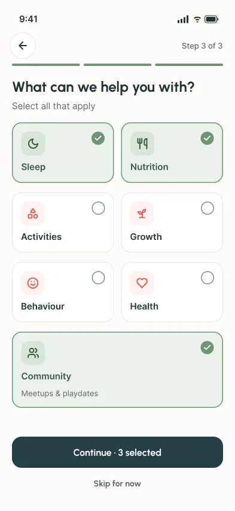
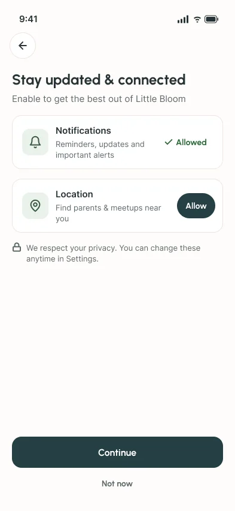
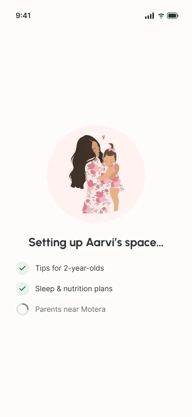
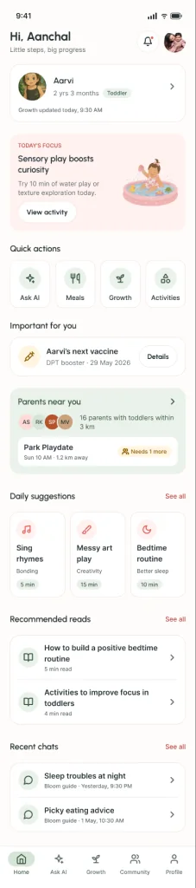
What changed in the second pass
- — One screen fewer: sign-up and log-in moved onto the intro slides.
- — No repeated questions; the stage comes from the child’s age.
- — Contrast fixes across the colour system.
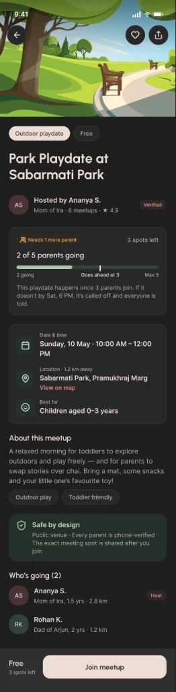
Stop 08 of 08
What I learned
Check the problem statement against the data
I wrote the problem around nuclear families, but most respondents lived in joint families and still felt unsure, so I rewrote it. The survey also pointed to activities as where parents felt least confident.
Put safety in the main flow
Because Community leads to strangers meeting in person, the safety rules, the minimum and the called-off rule needed to be visible while joining, not tucked away in settings.
If I took this further
- — Test the Community flow with first-time parents, especially the minimum-of-3 rule and the tentative state.
- — Design how phone verification works; the safety rules currently promise it.
- — Explore traditional remedies, the idea with the strongest yes in the survey (13 of 18).